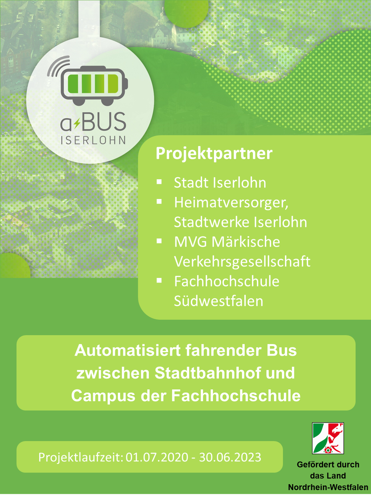

<!DOCTYPE html>
<html lang="en">

<head>
  <title>Project</title>
  <meta charset="utf-8">
  <meta name="viewport" content="width=device-width, initial-scale=1">
  <link rel="stylesheet" href="https://maxcdn.bootstrapcdn.com/bootstrap/4.5.2/css/bootstrap.min.css">
  <script src="https://ajax.googleapis.com/ajax/libs/jquery/3.5.1/jquery.min.js"></script>
  <script src="https://cdnjs.cloudflare.com/ajax/libs/popper.js/1.16.0/umd/popper.min.js"></script>
  <script src="https://maxcdn.bootstrapcdn.com/bootstrap/4.5.2/js/bootstrap.min.js"></script>
  <link rel="stylesheet" href="https://use.fontawesome.com/releases/v5.7.0/css/all.css"
    integrity="sha384-lZN37f5QGtY3VHgisS14W3ExzMWZxybE1SJSEsQp9S+oqd12jhcu+A56Ebc1zFSJ" crossorigin="anonymous">


  <style>
  </style>
  <link rel="stylesheet" href="style.css">
  <link rel="stylesheet" href="media_queries.css">
  <script type="text/javascript" src="https://maps.google.com/maps/api/js?v=3&sensor=false&language=en"></script>
  <script type="text/javascript">
    var map,
      currentPositionMarker,
      mapCenter = new google.maps.LatLng(40.700683, -73.925972),
      map;

    function initializeMap() {
      map = new google.maps.Map(document.getElementById('map_canvas'), {
        zoom: 17,
        center: mapCenter,
        mapTypeId: google.maps.MapTypeId.ROADMAP
      });
    }

    function locError(error) {
      // the current position could not be located
      alert("The current position could not be found!");
    }

    function setCurrentPosition(pos) {
      currentPositionMarker = new google.maps.Marker({
        map: map,
        position: new google.maps.LatLng(
          pos.coords.latitude,
          pos.coords.longitude
        ),
        title: "Current Position"
      });
      map.panTo(new google.maps.LatLng(
        pos.coords.latitude,
        pos.coords.longitude
      ));
    }

    function displayAndWatch(position) {
      // set current position
      setCurrentPosition(position);
      // watch position
      watchCurrentPosition();
    }

    function watchCurrentPosition() {
      var positionTimer = navigator.geolocation.watchPosition(
        function (position) {
          setMarkerPosition(
            currentPositionMarker,
            position
          );
        });
    }

    function setMarkerPosition(marker, position) {
      marker.setPosition(
        new google.maps.LatLng(
          position.coords.latitude,
          position.coords.longitude)
      );
    }

    function initLocationProcedure() {
      initializeMap();
      if (navigator.geolocation) {
        navigator.geolocation.getCurrentPosition(displayAndWatch, locError);
      } else {
        alert("Your browser does not support the Geolocation API");
      }
    }

    $(document).ready(function () {
      initLocationProcedure();
    });
  </script>
</head>

<body>


  <div id="demo" class="carousel" data-ride="carousel">

    <div class="carousel-inner">
      <!-- <div class="carousel-item active text-center this_me">
        
      </div>
      <div class="carousel-item text-center this_me">
        

      </div>
      <div class="carousel-item text-center this_me">
        

      </div>  -->
      <div class="carousel-item active  text-center this_me">
        <canvas class="fixa " id="canvas" width="400" height="400">
        </canvas>
        <div class="mapouter">
          <div class="gmap_canvas " id="map_canvas">
            
          </div>
          
          
        </div>
        
      </div>
      <!-- <div class="carousel-item text-center this_me">
        <div id="map_canvas" style="height:100vh;"></div>
      </div> -->
      
      <a class="carousel-control-prev" href="#demo" data-slide="prev">
        <!-- <span class="carousel-control-prev-icon" style="color: black;"></span> -->
        <i class="fas fa-arrow-left fa-2x" style="color: black;"></i>
      </a>
      <a class="carousel-control-next" href="#demo" data-slide="next">
        <!-- <span class="carousel-control-next-icon"></span> -->
        <i class="fas fa-arrow-right fa-2x" style="color: black;"></i>
      </a>
    </div>

    <!-- <script src="location.js"></script> -->
    <script src="canvas_and_corusal.js"></script>
    <script src="clock.js"></script>


</body>

</html>
